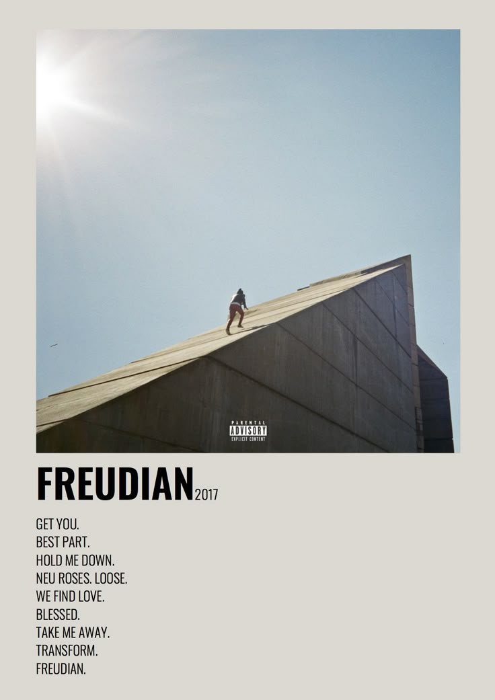
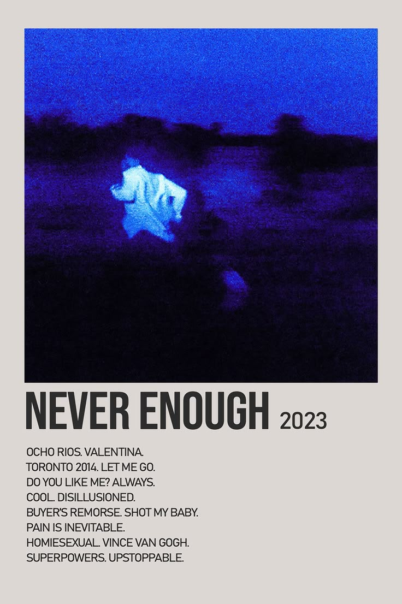

Daniel Caesar
🎧˖ . ݁𝜗𝜚. ݁₊
Background:
Daniel Caesar was born in Toronto, Ontario, and raised in Oshawa. His father, Norwill Simmonds, was a gospel singer, which influenced Daniels early exposure to music.
He began singing in church and was heavily influenced by soul and gospel music.
Music & Career:
Daniel gained recognition in the music industry with the release of the two EP's, Praise Break (2014) and Pilgrims Paradise (2015).
His Debut solo album, Freudian, released in 2017 which earned him 3 Grammy nominations.
In 2019 he released his second studio album, case study, which established his reputation as a leading R&b artist.
2021, he acheived mainstream sucess with his feature in Justin Biebers hit single, Peaches, which topped the US Billboard Hot 100.
His 3rd album, Never enough an one of my personal favourites was realeased in 2023 under Republic Records, starting a new chapter in he career.
His four and most latest album, Son of Spergy was released in 2025, inspired by his reconciliation with his parents.
Musical Style & Influence:
Daniel Caesar is known for his moody, style that blends R&B, soul, and pop.
His music often explores themes of love, being vulnerable, and personal growth.
He has been credited with helping usher in a new wave of genre.
Conclusion:
Daniel continues to be a significant figure in the musi inustry, known or his heartfelt lyrics an melodies.
His evolution as an artist and individual reflects his dedication to his talent, and passion, an the abillity to resonate with listeners and fans worldwide.
Albums:


More Info:
Daniel Caesar
Ariana Grande